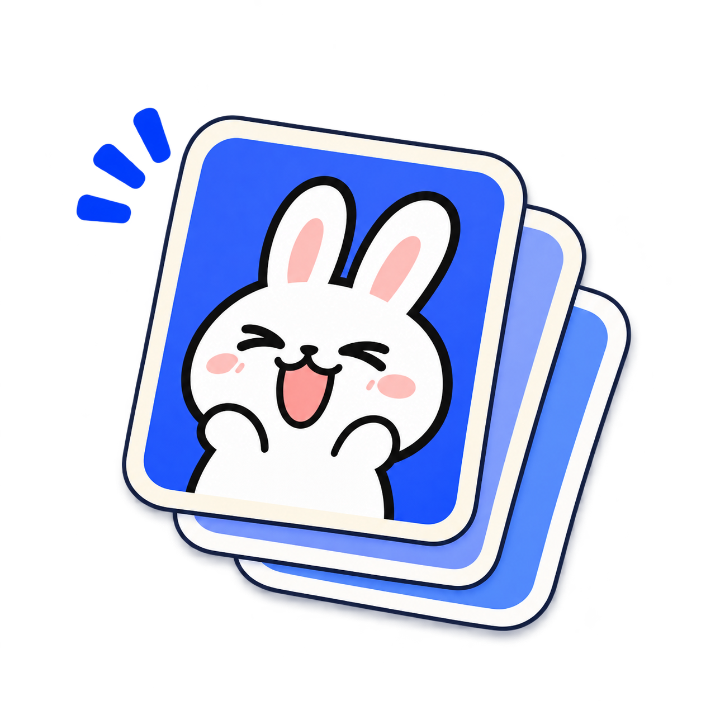

抖音提取图片 · 动图 · 回复
小红书提取图片 · 回复 · 实况
继续上次扫描已读 128 条评论
发现评论里的好表情

发现评论里的好表情
透明 PNG 原图，显示 154 × 154；不再用几何图形简化。
蓝色网格由页面绘制，与插画分离。Hero 高 176，圆角 16。
入口显示 52 × 52，不变形、不改成单色。
抖音来自 App Store；小红书来自官网。
设置 25 / 继续扫描 28 / 箭头 26。
统一 1.8 线宽与圆端点，点击范围至少 44。
英文 Manrope；中文 Noto Sans SC。
字体文件与开源许可随设计稿保存，避免系统字体替代。
左右边距 16；顶部栏高 68。
主标题保持两行，插画不挤占标题。
有可恢复任务时显示。
无任务则隐藏，不留空白占位。
图标 24，文字 12。
选中：蓝色实心图标＋浅蓝底。